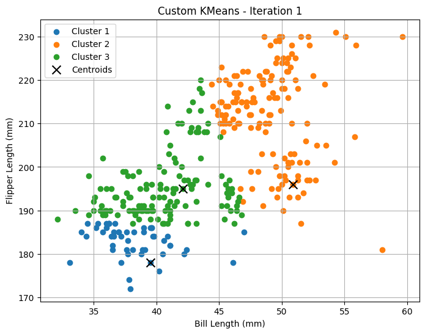
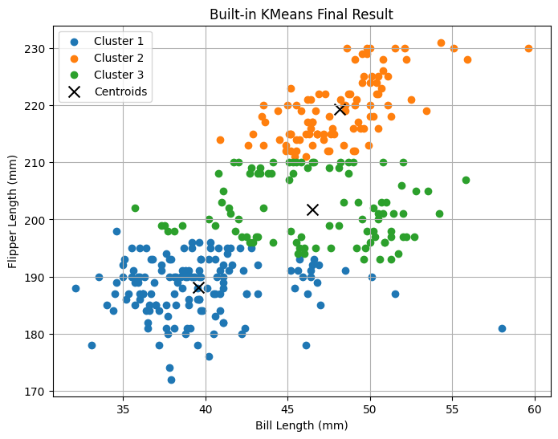
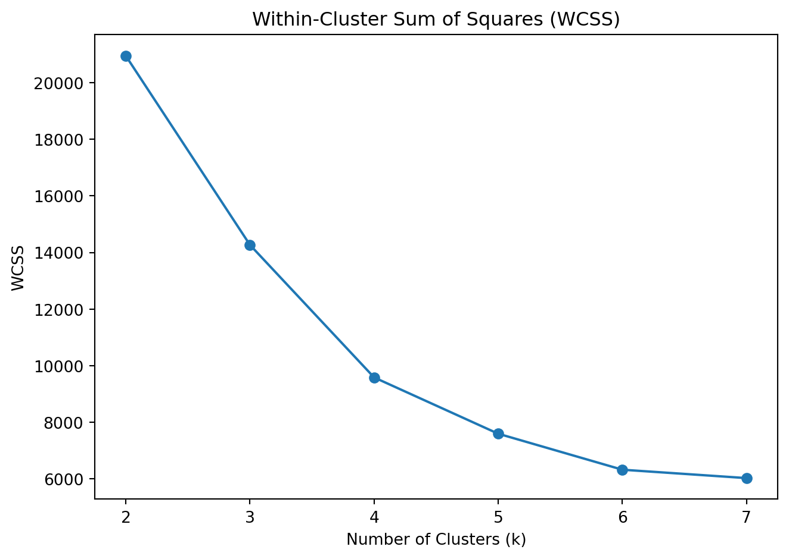
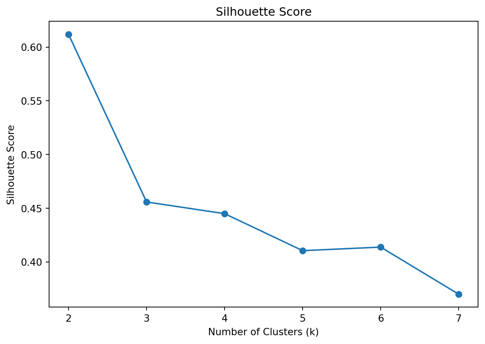

penguins = pd.read_csv("/Users/qqtweety/Downloads/mgta495/palmer_penguins.csv")
penguins.head()
penguins_clean = penguins[['bill_length_mm', 'flipper_length_mm']].dropna().reset_index(drop=True)
X = penguins_clean.valuesKey Drivers Analysis
Introduction
Clustering helps reveal patterns when there is no target variable to predict. Here, K-Means is used to explore the Palmer Penguins dataset through two measurements—bill length and flipper length—to see whether the data naturally separates into distinct groups without using species labels. After forming clusters, we compare them back to the species categories to check how well morphology alone reflects biological differences.
K-Means is an unsupervised method that assigns each observation to one of k clusters by minimizing within-cluster variation. Because the result depends on the choice of k and on initialization, it is useful to inspect how the algorithm evolves and to evaluate multiple cluster counts rather than relying on a single run.
This page includes a from-scratch implementation alongside the scikit-learn version, visualizes centroid updates across iterations, and uses WCSS and silhouette score to guide the choice of k.
Objective
The objective of this analysis is to apply K-Means clustering to the Palmer Penguins dataset using bill length and flipper length, and to examine whether these two measurements alone reveal meaningful structure without using species labels. To make the method transparent, K-Means is implemented both from scratch and with scikit-learn, and the results are compared in terms of centroid locations and cluster assignments. We also visualize how centroids and memberships change across iterations to understand convergence behavior. Finally, we evaluate multiple values of k using within-cluster sum of squares (WCSS) and silhouette score, then interpret the selected clustering by comparing groups back to species categories after the clustering step.
Data Description
This project uses the Palmer Penguins dataset. Each row represents one observed penguin and includes metadata (species, island, sex, year) plus physical measurements recorded in standard units.
Variables
species: Adélie, Chinstrap, or Gentoo
island: island of observation
bill_length_mm: bill length (mm)
bill_depth_mm: bill depth (mm)
flipper_length_mm: flipper length (mm)
body_mass_g: body mass (g)
sex: recorded biological sex (when available)
year: observation year
Features used for clustering
K-Means is fit using two continuous features:
- Bill length (
bill_length_mm) - Flipper length (
flipper_length_mm)
Species is not used during clustering; it is used afterward to interpret how clusters align with known categories.
custom_centroids, custom_labels = kmeans_custom(X, k=3)


K-Means Clustering
Selecting the Number of Clusters
Figure 1. Custom K-Means — Iteration 1 
With randomly initialized centroids, clusters are still loosely defined and several regions overlap, especially in the middle of the plot. The centroid markers show starting positions that do not yet match the densest parts of the data.
Figure 2. Custom K-Means — Iteration 2 
After one update, centroids shift sharply toward high-density areas and the cluster boundaries become more coherent. Most of the separation emerges here, with a clearer split between the high–flipper-length group and the two lower bands.
Figure 3. Custom K-Means — Final clustering (Iteration 10)

Iteration 10 represents the converged solution. Centroid movement is negligible relative to earlier iterations, and cluster assignments are stable. The final clustering forms three distinct groups, primarily separated by flipper length with bill length refining boundaries within clusters.
# Run the built-in KMeans for comparison
sk_model = KMeans(n_clusters=3, random_state=42)
sk_labels = sk_model.fit_predict(X)
sk_centroids = sk_model.cluster_centers_
# Plot result from sklearn
plot_clusters(X, sk_centroids, sk_labels, "Built-in KMeans Final Result")
print("Custom Centroids:\n", custom_centroids)
print("\nBuilt-in Centroids:\n", sk_centroids)Custom Centroids:
[[ 38.45304348 187.05217391]
[ 47.6296 216.92 ]
[ 45.95483871 196.7311828 ]]
Built-in Centroids:
[[ 39.56013986 188.13986014]
[ 48.14375 219.29166667]
[ 46.49680851 201.76595745]]Comparison with scikit-learn implementation
To validate the custom K-Means implementation, the final centroids are compared with those obtained from scikit-learn. Each centroid is shown as:
(Bill Length, Flipper Length)
| Cluster | Custom Implementation | scikit-learn |
|---|---|---|
| 1 | (38.45, 187.05) | (39.56, 188.14) |
| 2 | (47.63, 216.92) | (48.14, 219.29) |
| 3 | (45.95, 196.73) | (46.50, 201.77) |
The centroid locations are close across implementations. Small differences are expected due to initialization and convergence tolerance, but both methods identify the same overall cluster structure.
from sklearn.metrics import silhouette_score
# Store metrics for different K values
ks = range(2, 8)
wcss = [] # within-cluster sum of squares (inertia)
silhouette_scores = []
for k in ks:
kmeans = KMeans(n_clusters=k, random_state=42)
labels = kmeans.fit_predict(X)
wcss.append(kmeans.inertia_)
silhouette_scores.append(silhouette_score(X, labels))Within-Cluster Sum of Squares (WCSS)
Selecting the Number of Clusters (WCSS) {fig4_wcss}
WCSS decreases as the number of clusters increases, which is expected because additional clusters reduce within-group variance. The largest drop occurs between k = 2 and k = 3, after which the curve begins to flatten. This “elbow” suggests that three clusters capture most of the structure in the data without adding unnecessary complexity.
plt.figure(figsize=(7, 5))
plt.plot(ks, wcss, marker='o')
plt.title('Within-Cluster Sum of Squares (WCSS)')
plt.xlabel('Number of Clusters (k)')
plt.ylabel('WCSS')
plt.tight_layout()
plt.show()
Silhouette Score
Cluster Quality (Silhouette Score)  {fig5_silhouette}
{fig5_silhouette}
The silhouette score is highest at k = 2, but remains reasonably strong at k = 3. Because the WCSS elbow occurs at three clusters and the dataset contains three biological species, k = 3 provides a balanced and interpretable solution.
plt.figure(figsize=(7, 5))
plt.plot(ks, silhouette_scores, marker='o')
plt.title('Silhouette Score')
plt.xlabel('Number of Clusters (k)')
plt.ylabel('Silhouette Score')
plt.tight_layout()
plt.show()
list(zip(ks, wcss, silhouette_scores))[(2, 20949.785311278196, np.float64(0.6117940477662409)),
(3, 14269.555284121907, np.float64(0.45576101830851007)),
(4, 9587.135276652694, np.float64(0.4448839684032104)),
(5, 7597.607576867576, np.float64(0.4104355873447603)),
(6, 6326.305140616324, np.float64(0.4137288893863444)),
(7, 6030.078872777223, np.float64(0.36988077481143466))]Evaluation of Cluster Quantity
To select the number of clusters, WCSS and silhouette scores were computed for k = 2 to 7.
| K | WCSS | Silhouette Score |
|---|---|---|
| 2 | 20949.79 | 0.612 |
| 3 | 14269.56 | 0.456 |
| 4 | 9587.14 | 0.445 |
| 5 | 7597.61 | 0.410 |
| 6 | 6326.31 | 0.414 |
| 7 | 6030.08 | 0.370 |
Although the silhouette score is highest at k = 2, this solution collapses two biologically distinct groups into a single cluster. The WCSS curve shows a clear elbow at k = 3, indicating substantial variance reduction when moving from 2 to 3 clusters.
Because three clusters preserve meaningful morphological distinctions while still maintaining reasonable separation, k = 3 provides a more interpretable segmentation.
import matplotlib.pyplot as plt
from sklearn.cluster import KMeans
# Fit KMeans for K=3
kmeans_3 = KMeans(n_clusters=3, random_state=42)
labels_3 = kmeans_3.fit_predict(X)
centroids_3 = kmeans_3.cluster_centers_
# Plotting function
def plot_kmeans_clusters(X, labels, centroids):
plt.figure(figsize=(8, 6))
colors = ['red', 'gold', 'magenta']
for i in range(3):
plt.scatter(X[labels == i, 0], X[labels == i, 1], s=10, color=colors[i], alpha=0.7)
plt.scatter(centroids[i, 0], centroids[i, 1], c='black', s=100, edgecolors='black', linewidths=1.5)
plt.title('K-Means Clustering (K = 3)')
plt.xlabel('Bill Length (mm)')
plt.ylabel('Flipper Length (mm)')
plt.grid(True)
plt.tight_layout()
plt.show()
plot_kmeans_clusters(X, labels_3, centroids_3)
Final Clustering Result (k = 3)
 {fig6_kmeans_k3}
{fig6_kmeans_k3}
With k = 3, the algorithm separates the data into three distinct groups. The upper cluster captures penguins with the longest flippers and bills, the lower-left cluster represents shorter measurements, and the middle cluster occupies the intermediate range. Centroids (black markers) lie near the center of each group, indicating stable cluster formation.
Interpretation
The three clusters differ primarily along flipper length. One group shows substantially shorter flippers and bills, another shows the longest measurements, and the third occupies the intermediate range.
Centroid values indicate that flipper length drives most of the separation, with differences exceeding 20–30 mm between groups. Cluster sizes are reasonably balanced, suggesting the segmentation is not dominated by outliers.